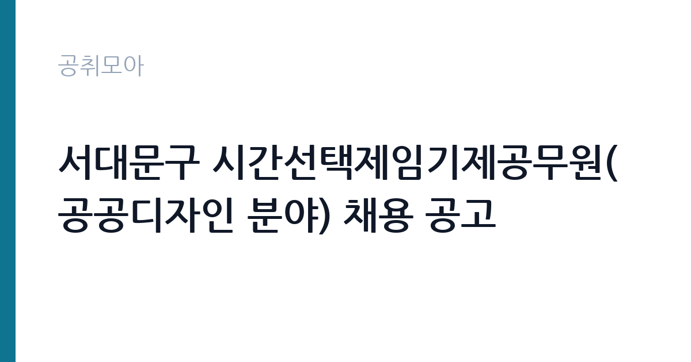

[지자체] 서대문구 시간선택제임기제공무원(공공디자인 분야) 채용 공고
서울특별시 서대문구 · 서울 · 마감 2026-11-18 (D-17) · 출처 나라일터

한눈에 보는 모집 조건
| 기관 | 서울특별시 서대문구 |
|---|---|
| 공고명 | 서대문구 시간선택제임기제공무원(공공디자인 분야) 채용 공고 |
| 고용형태 | 임기제 |
| 근무지 | 서울 |
| 게시일 | 2026-11-02 |
| 마감일 | 2026-11-18 (D-17) |
지원자격, 이렇게 읽으세요
- 시간선택제임기제다급 1명
- 접수 ~2026-11-18 마감
- 세부 조건은 원문 공고문 확인
이 공고는 응시자격 세부사항을 첨부 공고문으로 안내하고 있습니다. 본문에서 확인되는 조건은 직급과 근무 형태입니다. 채용직급은 시간선택제임기제공무원 다급이고 분야는 공공디자인, 채용인원은 1명, 근무기간은 채용일로부터 1년 이내에 주 35시간입니다. 접수는 방문 또는 등기우편만 가능하고 팩스, 택배, 인터넷 접수는 받지 않습니다. 접수처는 서대문구청 도시계획과 공공디자인팀이며, 응시자격과 제출서류는 첨부 공고문에서 확인해야 합니다. 지방공무원법 제31조의 결격사유 해당 여부는 기본 요건으로 적용됩니다.
이 공고의 포인트
첫 번째 포인트는 근무 형태입니다. 주 35시간 시간선택제라 주 5일 전일제보다 하루 5시간가량 짧게 일합니다. 육아나 학업을 병행해야 하는 지원자에게 실질적인 선택지가 됩니다. 두 번째는 접수 기간입니다. 11월 16일부터 18일까지 사흘이고 방문과 등기우편만 인정되어, 온라인 접수에 익숙한 지원자에게는 준비 시간이 짧습니다. 세 번째는 직무입니다. 서대문구 도시계획과 공공디자인팀에서 일하며, 공공디자인 관련 사업의 기획과 심의 지원, 사업 관리 업무를 맡습니다.
전형은 어떻게 진행되나
전형 절차와 일정은 첨부 공고문에 상세히 안내되어 있습니다. 본문에서 확인되는 것은 접수 방식과 근무 조건이며, 서류전형과 면접시험의 배점과 일정은 원문 공고문을 확인해야 합니다. 지방임기제공무원 채용은 통상 서류전형으로 직무 적합성을 심사한 뒤 면접시험으로 최종 선발하는 2단계 구조로 운영됩니다. 접수는 방문 또는 등기우편만 가능하고, 등기우편은 마감일 도착분만 인정되는 경우가 일반적이므로 발송 시점을 넉넉히 잡아야 합니다.
원문에서 확인한 전형 방식
서대문구 시간선택제임기제공무원을 다음과 같이 공개모집하오니 유능한 분들의 많은 지원바랍니다. 1. 채용직급 및 분야 : 시간선택제임기제공무원 다급(공공디자인 분야) 2. 채용인원 : 1명 3. 근무기간 : 채용일로부터 1년 이내(주35시간) 4. 접수기간 : 2026. 11. 16.(월) ~ 11. 18.(수) 5. 접수방법 : 방문 또는 등기우편 접수 ※ 팩스, 택배, 인터넷 등 접수 불가 6. 접수처 : 서대문구청 도시계획과 공공디자인팀(서울 서대문구 연희로 247, 서대문구청 제3별관 8층) 7. 응시자격 등 세부사항 : 붙임 공고문 참조 8. 문의전화: 02-330-1994 ※ 자세한 사항은 공고문을 참고하시기 바랍니다.
이런 분께 추천해요
- 공공디자인 관련 학위나 실무 경력이 있는 분. 서대문구 도시계획과 공공디자인팀에서 근무합니다.
- 주 35시간 근무로 경력 공백을 메우려는 분. 1년 이내 계약이지만 실무 경력을 쌓을 수 있습니다.
- 서울 서대문구에서 통근이 가능한 분. 접수가 방문과 등기우편만 인정되는 만큼 지역 접근성이 중요합니다.
지원 전 체크리스트
- 주 35시간 근무와 1년 이내 계약 조건을 수용할 수 있는가. 근무시간이 응시 판단의 첫 기준입니다.
- 11월 16일부터 18일까지 방문 또는 등기우편으로 접수할 수 있는가. 팩스와 인터넷 접수는 받지 않습니다.
- 공공디자인 관련 자격이나 경력 증빙을 준비했는가. 세부 요건은 첨부 공고문에 있습니다.
- 등기우편으로 보낸다면 마감일 도착이 가능한 시점에 발송했는가. 도착 기준으로 접수 여부가 갈립니다.
모집 일정과 제출 타이밍
접수는 2026년 11월 16일 월요일부터 11월 18일 수요일까지 사흘간입니다. 접수처는 서울 서대문구 연희로 247, 서대문구청 제3별관 8층 도시계획과 공공디자인팀입니다. 방문 또는 등기우편만 인정되고 팩스와 택배, 인터넷 접수는 받지 않습니다. 근무 시작은 채용일부터이고 계약기간은 1년 이내입니다. 서류전형과 면접시험 일정은 첨부 공고문에 안내되어 있으므로 접수 전에 반드시 확인해야 합니다. 문의는 서대문구청 도시계획과로 하면 됩니다.
직무 이해하기: 지자체
공공디자인은 도로와 공원, 가로시설물, 공공건축물처럼 공공영역에서 시민이 접하는 디자인을 다루는 분야입니다. 서대문구 도시계획과 공공디자인팀은 관내 공공시설의 디자인 개선 사업과 공공디자인 심의를 담당합니다. 실무는 사업 기획과 예산 편성 지원, 설계 용역 관리, 디자인 심의 자료 준비, 완료 후 유지관리 확인으로 이어집니다. 가로시설물 정비나 마을 환경 개선 사업처럼 지역 주민과 직접 맞닿는 사업이 많아, 현장 확인과 민원 대응이 업무의 상당 부분을 차지합니다. 시간선택제라 주 35시간 안에서 업무를 배분합니다.
자기소개서 작성 팁
시간선택제임기제 공고의 자기소개서는 직무와의 연결을 얼마나 구체적으로 보여주는지가 관건입니다. 첫 문단에서는 공공디자인 분야에서 수행한 일을 사업 단위로 제시하십시오. 참여한 사업의 규모와 본인이 맡은 역할을 함께 적으면 평가가 쉬워집니다. 두 번째 문단에서는 행정 업무 경험을 넣으십시오. 용역 관리나 예산 집행, 심의 자료 준비 경험이 있으면 임기제 직무에 직접 연결됩니다. 세 번째로는 주 35시간 근무를 1년간 유지할 수 있다는 점을 분명히 밝히십시오. 시간선택제 채용에서 근무 지속성은 실제 평가 항목이 됩니다. 마지막으로 서대문구의 지역 특성과 연결된 관심사를 한 줄 덧붙이면 지원 동기가 구체화됩니다.
면접 준비 포인트
면접에서는 직무 전문성과 근무 지속성을 함께 봅니다. 예상 질문은 세 갈래입니다. 첫째 공공디자인 실무입니다. 가로시설물 디자인 개선 사업을 맡는다면 무엇부터 확인할지, 심의 기준을 어떻게 적용할지를 묻습니다. 둘째 행정 처리 능력입니다. 용역 계약과 예산 집행 과정에서 문제가 생겼을 때의 대응을 확인합니다. 셋째 근무 조건입니다. 주 35시간 근무가 가능한지, 1년 계약 이후 계획이 무엇인지를 묻습니다. 답변은 결론부터 말하고 사례를 한두 개 붙이는 방식이 임기제 면접에 적합합니다. 첨부 공고문의 평가 항목을 미리 확인해 두십시오.
급여·근무조건 읽는 법
공고문 본문에는 보수 금액이 명시되어 있지 않습니다. 시간선택제임기제 다급은 지방공무원 보수 규정의 연봉등급제를 적용받고, 시간선택제이므로 전일제 기준 연봉액을 근무시간 비율로 조정해 책정하는 것이 일반적입니다. 주 35시간은 법정 전일제 근무시간인 주 40시간의 87.5퍼센트 수준입니다. 구체적 연봉액과 수당 지급 기준은 첨부 공고문과 서대문구 도시계획과에 확인해야 합니다. 참고로 알리오 2025년 결산 공시 기준 공공기관 전체 일반정규직 1인당 평균보수는 7,376만 9천원, 신입사원 평균초임은 4,031만 6천원이지만, 지방공무원 임기제는 별도 보수 체계라 이 값과 직접 비교하기는 어렵습니다.
자주 묻는 질문
- 온라인으로 접수할 수 있나요?
방문 또는 등기우편 접수만 가능합니다. 팩스, 택배, 인터넷 접수는 받지 않으며, 접수처는 서대문구청 제3별관 8층 도시계획과 공공디자인팀입니다. - 근무시간은 어떻게 되나요?
주 35시간 시간선택제입니다. 계약기간은 채용일로부터 1년 이내이며, 채용직급은 시간선택제임기제공무원 다급입니다. - 응시자격은 어디서 확인하나요?
응시자격과 제출서류 등 세부사항은 첨부된 공고문에 안내되어 있습니다. 접수 전에 공고문을 내려받아 확인해야 합니다.
함께 보면 좋은 공고
[지자체] 2026년 하동군 지방시간선택제임기제공무원(축제분야 전문요원) 채용 — 마감 2026-11-13[지자체] 거제시 보건소장(개방형직위) 임용시험 시행계획 재공고 — 마감 2026-11-13[지자체] 2026년 상록수보건소장(개방형직위) 임용시험 시행계획 2차 재공고 — 마감 2026-11-16출처: 나라일터 공개정보를 바탕으로 공취모아가 정리한 안내글입니다. 모집 조건·일정은 변경될 수 있으니 지원 전 반드시 원문 공고문을 확인하세요. 본 글은 정보 제공용이며 합격을 보장하지 않습니다.